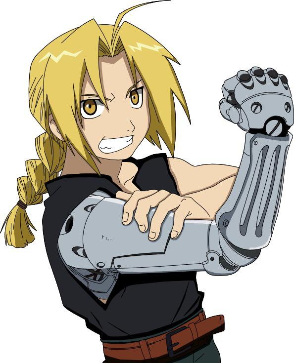

Edward Elric
Fullmetal Alchemist
About
Edward Elric, also known as the Fullmetal Alchemist, is the main protagonist of Fullmetal Alchemist. He and his younger brother Alphonse attempted to resurrect their mother using alchemy, but the failed experiment cost Edward his left leg and Alphonse's entire body. Edward sacrificed his right arm to bind Alphonse's soul to a suit of armor.
Abilities
- Alchemy: Science of transmuting matter
- Transmutation Circle: Draws arrays to perform alchemy without a circle
- Automail: Prosthetic limbs made of metal
- Flame Alchemy: Uses ignition cloths for fire-based attacks
- Combat Alchemy: Quick transmutations in battle
Personality
Edward is hot-headed, proud, and stubborn, but has a big heart. He cares deeply for his brother and will do anything to restore his body. Despite his short temper, he is compassionate and fights for justice, often challenging the military's corrupt ways.